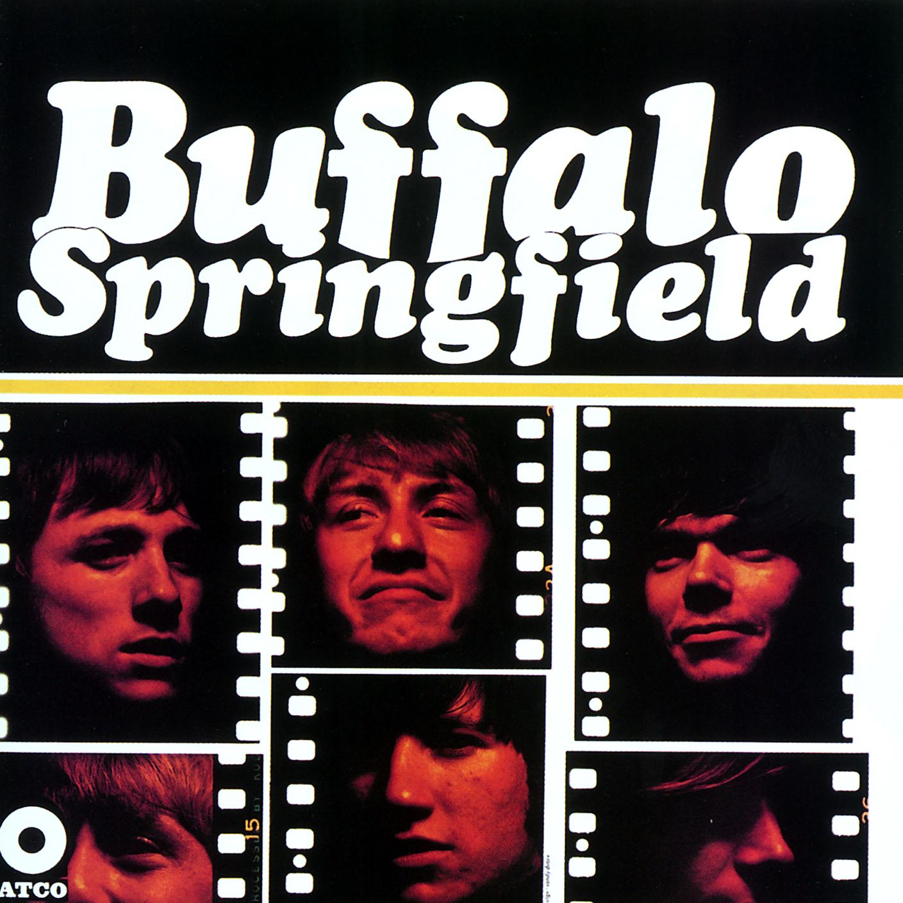

Day 13

Buffalo Springfield ◆ For What It’s Worth ◆ 1966
这首歌我应该是在 Centralia 上高中的时候听到的：在《战争之王》里，是电影的片头曲。这首歌是受1966年的民权运动启发，尤其是 Sunset Strip 宵禁暴乱。
豆知识：封面上的字体是 Cooper Black，一开始是个木板字体。Vox 有个讲 Cooper Black 的视频：Why this font is everywhere。
说到这我又想起来另一个很有意思的 Vox 视频：Where the 1960s “psychedelic” look came from，讲迷幻时期的海报风格是哪来的www
There's something happening here
What it is ain't exactly clear
There's a man with a gun over there
Telling me I got to beware
I think it's time we stop, children, what's that sound
Everybody look what's going down
There's battle lines being drawn
Nobody's right if everybody's wrong
Young people speaking their minds
Getting so much resistance from behind
It's time we stop, hey, what's that sound
Everybody look what's going down
What a field-day for the heat
A thousand people in the street
Singing songs and carrying signs
Mostly say, hooray for our side
It's s time we stop, hey, what's that sound
Everybody look what's going down
Paranoia strikes deep
Into your life it will creep
It starts when you're always afraid
You step out of line, the man come and take you away
We better stop, hey, what's that sound
Everybody look what's going down
Stop, hey, what's that sound
Everybody look what's going down
Stop, now, what's that sound
Everybody look what's going down
Stop, children, what's that sound
Everybody look what's going down